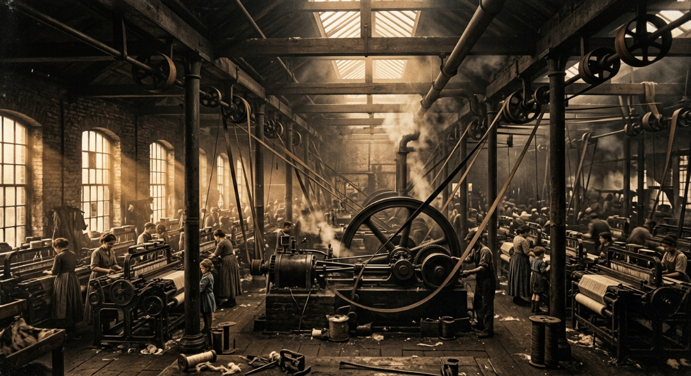
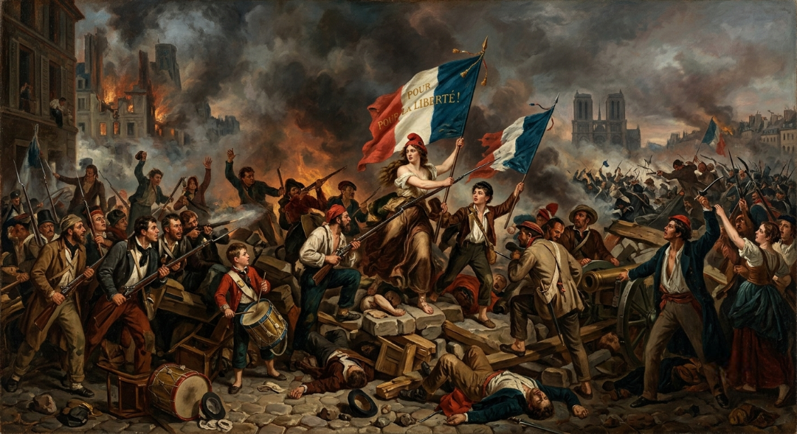
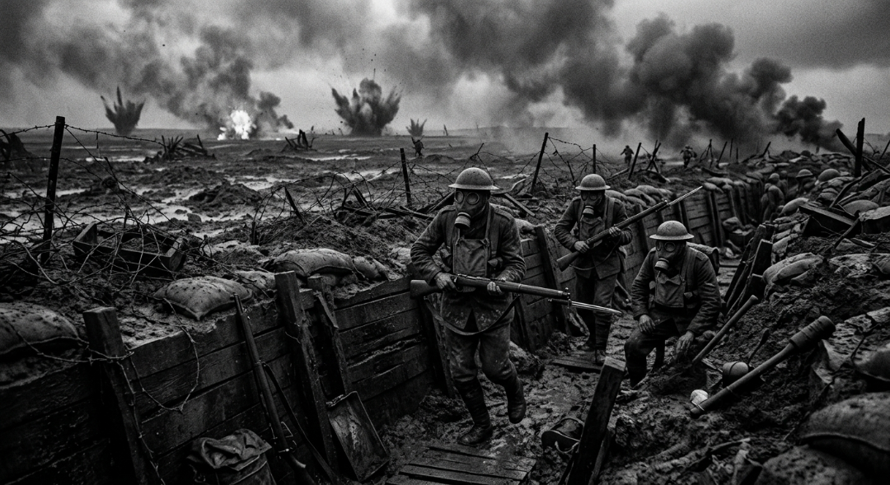
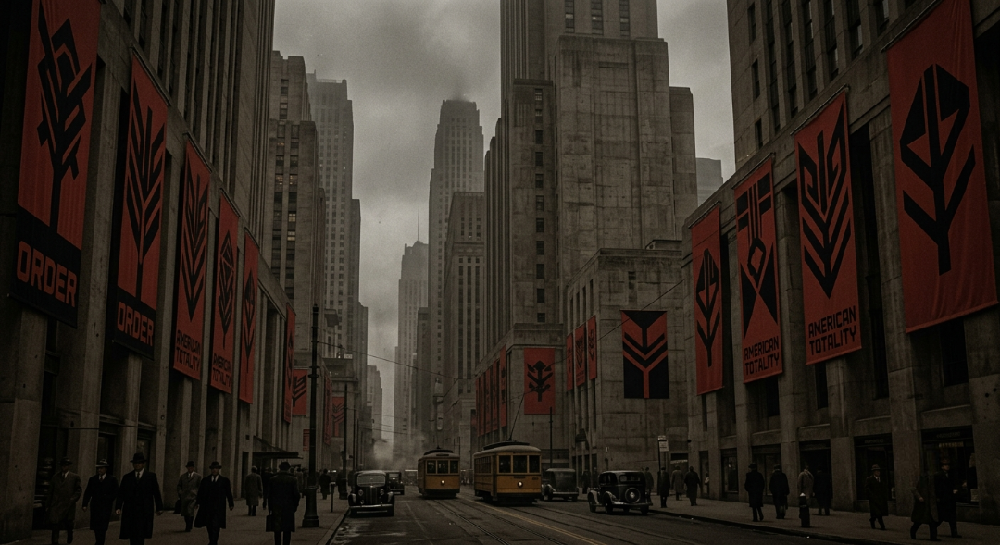
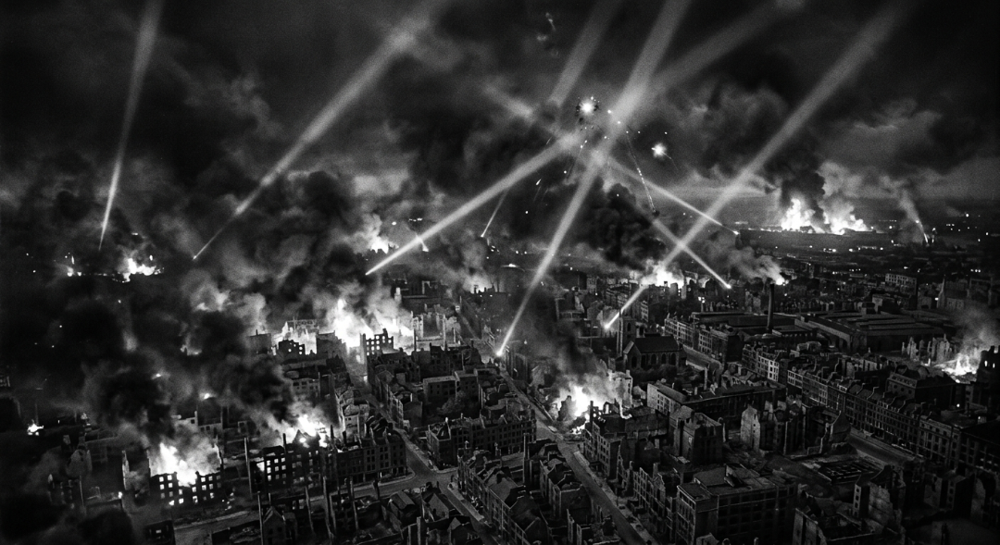
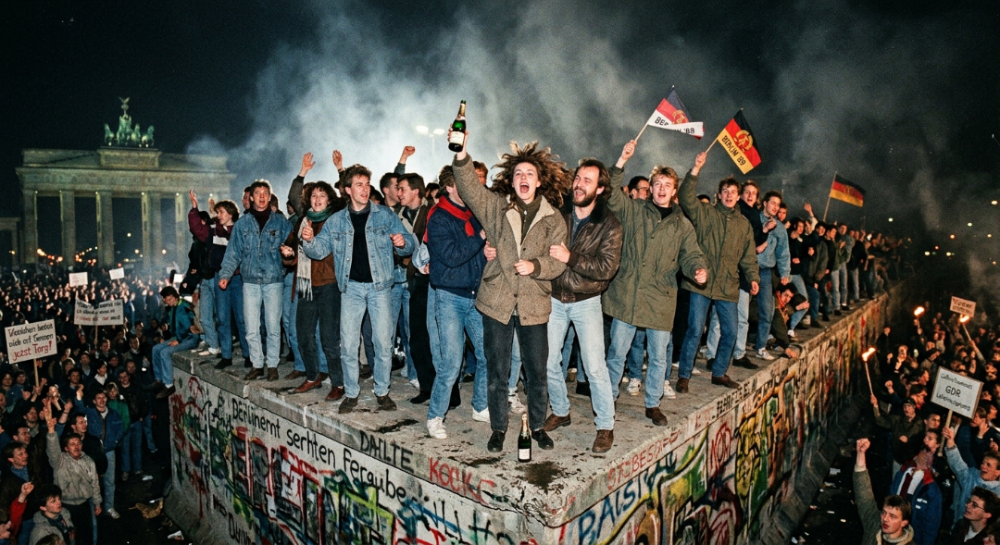
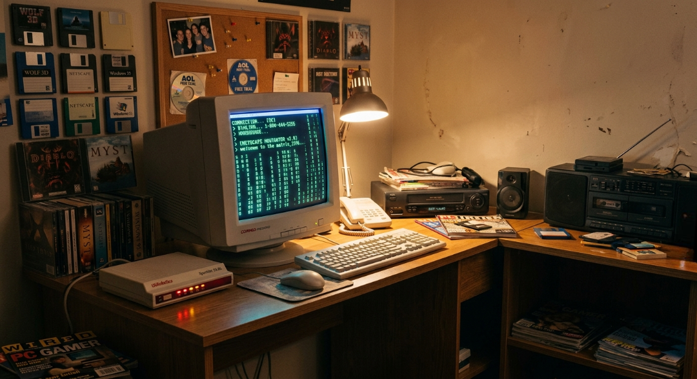

Тріумф пари, вугілля та заліза (1760-1830 рр.)
Промислова революція стала найглибшим переломом в історії людства з часів винайдення сільського господарства в неоліті. Все почалося у Великій Британії, де унікальне поєднання багатих родовищ кам'яного вугілля, доступного заліза, капіталу від колоніальної торгівлі та правової стабільності створило ідеальні умови для руйнування старого економічного устрою. Віковічні традиції ручної праці, які століттями обмежували можливості ремісничих цехів та мануфактур, раптово поступилися місцем механізованому виробництву. Поява перших ткацьких верстатів і, найголовніше, універсального парового двигуна Джеймса Ватта, назавжди звільнила людство від покладання виключно на силу м'язів, вітру чи води.
Механізація виробництва миттєво змінила географічний вигляд планети, запустивши нестримний процес масової урбанізації. За лічені десятиліття тихі аграрні регіони перетворилися на гігантські індустріальні центри, затягнуті густим чорним димом від незліченних фабричних труб, які сучасники поетично і з жахом називали "сатанинськими млинами". Селяни мільйонами залишали свої поля та рушали до міст у пошуках заробітку, перетворюючись на абсолютно новий соціальний клас — промисловий пролетаріат. Міста розросталися хаотично, без жодного планування чи каналізації, створюючи навколо блискучих фабричних контор похмурі, перенаселені робітничі квартали, де панували бідність, вогкість та хвороби.
Паралельно відбулася справжня транспортна революція, яка стиснула простір і час до невпізнаваності. Винахід залізничного локомотива Джорджем Стефенсоном та поява перших пароплавів дозволили перевозити тисячі тонн сировини й готової продукції на колосальні відстані зі швидкістю, яка раніше здавалася фантастичною. Залізничні колії, як сталеві капіляри нової індустріальної системи, прорізали континенти, зв'язуючи віддалені шахти з морськими портами й назавжди руйнуючи колишню замкнутість окремих регіональних ринків. Промислові товари стали дешевими та доступними, що призвело до формування перших зачатків сучасного глобального споживчого ринку.
Цей технічний тріумф мав дуже високу соціальну ціну, оскільки перші десятиліття машинної ери супроводжувалися нещадною експлуатацією людського ресурсу. На фабриках і в глибоких вугільних шахтах не існувало жодного поняття про техніку безпеки чи обмеження робочого дня, який тривав по 14–16 годин на добу без вихідних. Власники підприємств масово й абсолютно легально використовували працю маленьких дітей та жінок, оскільки їм можна було платити в кілька разів менше, ніж дорослим чоловікам, за ту саму виснажливу роботу. Це породило перші масштабні робітничі протести, рух луддитів, які в розпачі ламали нові машини, та заклало міцний ідеологічний фундамент для майбутніх соціалістичних та профспілкових рухів.
Промислова революція не просто змінила заводи — вона повністю переформатувала баланс світових сил, розділивши планету на передові індустріальні імперії та відсталі сировинні колонії. Західні держави, озброєні паровими машинами, залізним флотом та найновішою зброєю фабричного виробництва, отримали абсолютну військову й економічну перевагу над рештою світу. Традиційні азійські та африканські суспільства, які століттями спиралися на ремісництво, не змогли витримати конкуренції з дешевим європейським текстилем і металом. Машинна ера запустила безкомпромісний локомотив модернізації, який назавжди змінив хід людської еволюції та підготував ґрунт для настання новітнього часу.

Машинний вибух
Перехід від ручної праці до пари, зародження пролетаріату та радикальна зміна міського простору й екології.
Гуркіт гармат та бунт духу (1789 - 1848 рр.)
Кінець 18 століття ознаменувався не лише гуркотом фабричних машин, а й грандіозним політичним вибухом — Великою французькою революцією 1789 року, яка вщент зруйнувала старий абсолютистський порядок Європи. Створені нею гасла про свободу, рівність та братерство налякали монархів усього континенту, що призвело до серії кривавих коаліційних воєн. Із цього революційного хаосу піднялася постать Наполеона Бонапарта — геніального полководця, який проголосив себе імператором Франції та за лічені роки перекроїв карту Європи. Його армії пройшли маршем від Мадрида до Москви, руйнуючи старі феодальні кордони, скасовуючи кріпацтво та впроваджуючи свій знаменитий Цивільний кодекс, який став основою європейського права.
Наполеонівські війни стали першим прикладом "тотальної війни" Нового часу, де воювали вже не професійні наймані армії монархів, а цілі нації завдяки загальній військовій повинності. Масштаби битв, таких як Аустерліц чи Бородіно, вражали тогочасне суспільство небаченою кількістю жертв та застосуванням масованої артилерії. Хоча фінальний крах Наполеона під Ватерлоо у 1815 році призвів до реставрації старих монархій на Віденському конгресі, повернути історію назад було вже неможливо. Ідеї національного самовизначення, громадянських прав та лібералізму, посіяні французькими солдатами, глибоко вкоренилися в ментальності європейських народів.
Як потужна інтелектуальна та емоційна реакція на сухий раціоналізм Просвітництва та холодну, брудну індустріалізацію Машинної ери, виник Романтизм. Цей масштабний культурний рух охопив філософію, літературу, живопис та музику, поставивши в центр усього не холодний розум, а силу людських почуттів, пристрастей, містицизму та самотності. Романтики оспівували дику, нескорену природу, героїчне минуле, бунтарський дух особистості та народні казки, намагаючись втекти від похмурої реальності фабричних міст та монотонного повсякденного життя у світ мрій, міфів та високих ідеалів.
Живопис романтизму, представлений шедеврами Каспара Давида Фрідріха, Ежена Делакруа та Вільяма Тернера, відмовився від чітких класичних ліній на користь бурхливої динаміки кольору, світла та емоцій. На їхніх полотнах людина часто виглядала крихітною і безпорадною на тлі розбурханого океану, величних руїн чи палаючих революційних барикад. Література Байрона, Шеллі, Гюго та Міцкевича створила новий тип розчарованого у світі, але гордого героя-бунтаря, який бореться проти суспільних умовностей і тиранії, жертвуючи собою заради свободи народу або власної ідеї.
Цей потужний сплав політичного лібералізму, romantic націоналізму та соціального незадоволення промислових робітників вибухнув у 1848 році грандіозною хвилею революцій, відомою як "Весна народів". Вогонь повстань одночасно спалахнув у Франції, Німеччині, Австрійській імперії та Італії, змушуючи королів тікати чи приймати перші конституції. Хоча більшість цих революцій згодом були жорстоко придушені регулярними арміями, вони назавжди знищили залишки середньовічного феодалізму в Центральній Європі. Епоха довела, що ідеї свободи та національної ідентичності стали такою ж потужною матеріальною сили, як і парові двигуни на заводах.

Романтичний бунт
Епоха великих Наполеонівських війн та культурного вибуху Романтизму, що протиставив емоції сухій логіці машин.
Перша світова війна - кривавий заход старої Європи (1914 - 1918 рр.)
Початок 20 століття застав Європу на піку своєї величі, багатства та науково-технічного прогресу, який називали "Прекрасною епохою". Проте під цим блискучим фасадом ховалися смертельні протиріччя між провідними імперіями, які вели запеклу боротьбу за колонії, ринки збуту та військову перевагу на континенті. Світ розділився на два ворогуючі воєнно-політичні блоки — Антанту та Троїстий союз. Постріл сербського націоналіста Гаврила Принципа в Сараєві, який убив спадкоємця австрійського престолу Франца Фердинанда влітку 1914 року, став тією іскрою, що миттєво підірвала цей пороховий погріб, розв'язавши Першу світову війну.
Військова кампанія, яку всі генерали розраховували завершити за кілька тижнів до осіннього листопаду, швидко перетворилася на жахливу, багаторічну позиційну "м'ясорубку". Західний фронт застиг у колосальній мережі глибоких окопів та бліндажів, що тягнулися на сотні кілометрів від Швейцарії до Північного моря. Індустріальна ера показала своє найстрашніше обличчя: заводи тепер масово випускали не товари для людей, а знаряддя для їхнього промислового знищення. Кулемети, важка далекобійна артилерія та колючий дріт зробили будь-які спроби класичних кінних чи піхотних атак самогубством, перетворивши поле бою на випалену, затягнуту димом пустелю.
Саме на полях Першої світової війни людство вперше зіткнулося з новітніми технологіями масового вбивства, які назавжди змінили тактику війни. У 1915 році в битві біля Іпра німецька армія вперше застосувала хімічну зброю — смертоносний газ хлор, що змусило солдатів з обох боків одягнути похмурі протигази, які стали символом тогочасного жаху. Згодом на полі бою з'явилися перші незграбні сталеві монстри — англійські танки, здатні проривати лінії оборони, а в небі розгорнулися запеклі повітряні бої між першими бойовими літаками-винищувачами. Морські глибини контролювали німецькі підводні човни, які безжально топили торгові судна, ведучи тотальну економічну війну.
Війна повністю виснажила не лише армії, а й тил, змусивши держави мобілізувати абсолютно всі людські, промислові та продовольчі ресурси. Жінки масово пішли працювати на військові заводи замість чоловіків, які гнили в окопах Вердена та Сомми, де в безглуздих штурмах за кілька місяців гинули сотні тисяч людей заради просування фронту на кілька метрів. Економічний колапс, голод та колосальна психологічна втома суспільства призвели до внутрішніх соціальних вибухів. Найпотужніший із них стався в Російській імперії у 1917 році, де революція скинула царя і привела до влади більшовиків, які занурили країну в криваву громадянську війну.
Фінал війни у листопаді 1918 року ознаменував собою повний крах старого світового устрою та одночасне падіння чотирьох величних імперій: Російської, Німецької, Австро-Угорської та Османської. Комп'єнське перемир'я та наступний Версальський мирний договір зафіксували перемогу Антанти, але залишили Європу повністю зруйнованою, знекровленою та зануреною в глибоку депресію. Мільйони загиблих, мільйони калік та поява "втраченого покоління" молодих людей, які вміли лише воювати, створили ідеальне живильне середовище для майбутнього підйому найрадикальніших тоталітарних ідеологій XX століття.

Індустріальна бійня
Перша тотальна війна технологій, яка знищила чотири великі імперії та назавжди змінила класичну Європу.
Міжвоєнний період - хиткий мир і затьмарення розуму (1918 - 1939 рр.)
Два десятиліття між світовими війнами почалися з короткої ілюзії глобального карнавалу та безтурботності, відомої як "Бурхливі двадцяті". Економічне відновлення, розвиток джазової музики, кінематографа, автомобілебудування та поява стилю ар-деко створили враження, що людство назавжди залишило жахи окопів у минулому. Проте цей блискучий фасад тримався на хибних фінансових спекуляціях та нічим не забезпечених кредитах у США. У жовтні 1929 року відбувся грандіозний крах на Нью-Йоркській фондовій біржі, який миттєво запустив Велику депресію — наймасштабнішу й найруйнівнішу економічну кризу в сучасній історії, яка паралізувала світову торгівлю, закрила тисячі заводів і залишила без роботи чверть працездатного населення планети.
Економічний відчай, масове зубожіння та розчарування в капіталізмі й ліберальній демократії створили ідеальні умови для радикалізації суспільства. По всій Європі почали піднімати голову агресивні тоталітарні режими, які обіцяли простим людям порядок, стабільність і повернення колишньої національної величі в обмін на абсолютну відмову від особистої свободи. В Італії до влади прийшов Беніто Муссоліні зі своєю фашистською ідеологією, а в Німеччині на тлі приниження Версальським миром та шаленої інфляції законним шляхом переміг Адольф Гітлер і його нацистська партія, яка швидко перетворила країну на жорстоку диктатуру, побудовану на расовому терорі та культі війни.
Паралельно на сході Європи, на руїнах колишньої Російської імперії, зміцнів Радянський Союз під залізною рукою Йосипа Сталіна. Комуністичний режим розгорнув масштабну примусову індустріалізацію та колективізацію сільського господарства, яка супроводжувалася жорстоким винищенням мільйонів заможних селян, депортаціями цілих народів, розгалуженою системою концтаборів ГУЛАГ та штучними голодоморами. Світ опинився в пастці між двома радикальними ідеологічними полюсами — фашизмом і комунізмом, кожен з яких використовував найсучасніші технології пропаганди, цензури та масового терору для повного контролю над свідомістю своїх громадян.
Міжвоєнна культура та мистецтво стали дзеркалом цього глибокого ментального надлому та передчуття майбутньої катастрофи. Поява сюрреалізму в живописі на чолі з Сальвадором Далі відображала абсурдність, хаос та підсвідомі страхи суспільства, яке втратило колишні моральні орієнтири. У літературі панували автори "втраченого покоління", такі як Еріх Марія Ремарк та Ернест Гемінґвей, які у своїх творах показували психологічні травми ветеранів війни та нездатність знайти себе в новому цивільному житті. Архітектура школи Баугауз відмовилася від колишнього декору на користь суворого, чистого функціоналізму, який відповідав суворим вимогам нової індустріальної епохи.
Спроби тогочасних європейських лідерів зберегти мир за допомогою політики "умиротворення агресора" виявилися фатальною помилкою, яка лише наблизила початок нової катастрофи. Створена після Першої світової Ліга Націй виявилася абсолютно безпорадною, коли Японія вторглася в Китай, Італія захопила Ефіопію, а нацистська Німеччина без жодного пострілу анексувала Автрію та розчленувала Чехословаччину за мовчазної згоди Великої Британії та Франції в 1938 році. Мюнхенська змова та підписаний згодом таємний пакт Молотова — Ріббентропа між Гітлером і Сталіним остаточно знищили систему міжнародної безпеки, відкривши шлях до нової глобальної бійні, яка мала стати ще страшнішою за попередню.

Радикалізація та криза
Велика депресія руйнує світову економіку, викликаючи зліт нещадних фашистських та тоталітарних диктатур.
Друга світова війна - апокаліпсис планети (1939 - 1945 рр.)
Друга світова війна, яка розпочалася 1 вересня 1939 року з нападу нацистської Німеччини на Польщу, стала наймасштабнішим, найдорожчим та найбільш смертоносним конфліктом в історії людства. Вогняний вал цієї війни швидко затягнув у свій вир понад 60 держав, розгорнувшись на трьох континентах та в усіх океанах планети. На першому етапі німецький Вермахт продемонстрував світові стратегію "Бліцкригу" (блискавичної війни) — скоординовані удари танкових дивізій, мотопіхоти та авіації за лічені тижні розгромили армії Франції та Близького Сходу, залишивши Велику Британію під керівництвом Вінстона Черчилля сам на сам із нацистським монстром під час запеклих повітряних бомбардувань.
У червні 1941 року Гітлер здійснив фатальний крок, напавши на Радянський Союз, що відкрило Східний фронт — арену найбільш масштабних, кривавих і запеклих сухопутних битв, де під Сталінградом і Курськом було зламано хребет німецької військової машини. Після раптового нападу Японії на Перл-Гарбор у грудні 1941 року у війну вступили Сполучені Штати Америки, перетворивши конфлікт на безкомпромісне протистояння двох гігантських коаліцій — країн Осі та Антигітлерівської коаліції. Індустріальне виробництво США та колосальний людський ресурс СРСР стали вирішальними факторами, які поступово переламали хід війни на користь союзників.
Ця війна остаточно стерла будьякі межі між фронтом і тил, перетворившись на індустріальну інженерію масового винищення людей за расовими, національними та ідеологічними ознаками. Голокост — організоване на державному рівні нацистської Німеччини систематичне знищення шести мільйонів євреїв та мільйонів інших меншин у спеціальних таборах смерті, таких як Освенцим, Треблінка та Майданек — став найбільшою моральною і гуманітарною катастрофою в історії цивілізації. Використання газових камер, крематоріїв та залізничної логістики для конвеєрного вбивства беззахисних цивільних продемонструвало жахливу цинічність науки, поставленої на службу абсолютного зла.
Технологічний стрибок під час війни відбувався з випередженням часу: вчені з обох боків працювали над створенням зброї, здатної миттєво виграти війну. Наприкінці конфлікту Німеччина впровадила перші реактивні винищувачі та балістичні ракети Фау-2, які стали прабатьками сучасного космічного ракетобудування. Проте фінальну крапку поставили США в рамках секретного "Мангеттенського проєкту", створивши першу в світі ядерну зброю. У серпня 1945 року американські бомбардувальники скинули атомні бомби на японські міста Хіросіма та Нагасакі, миттєво спопеливши сотні тисяч людей і продемонструвавши світові початок нової, небезпечної ери в історії людства.
Перемога Антигітлерівської коаліції у вересні 1945 року залишила світ у руїнах, повністю змінивши геополітичну карту планети. Німеччина та Японія були окуповані й демілітаризовані, старі колоніальні імперії Велика Британія та Франція втратили свій колишній вплив, а на руїнах європейських держав виникла Організація Об'єднаних Націй (ООН), покликана не допустити нових глобальних воєн. Світ вийшов із цієї страшної м'ясорубки розділеним на дві нові сфери впливу, де класичні європейські держави назавжди передали світове лідерство двом новим наддержавам, які незабаром розпочнуть нову, приховану війну за повне домінування на планеті.

Друга світова війна
Наймасштабніший світовий конфлікт, жахлива трагедія Голокосту та перша руйнівна поява атомної зброї.
Холодна війна - 2 полюси та крижаний баланс страху (1945 - 1991 рр.)
Холодна війна стала унікальним періодом глобального протистояння, де дві наддержави — капіталістичні США та комуністичний СРСР — вели запеклу боротьбу за світове панування в усіх сферах життя, не вступаючи при цьому у відкритий військовий конфлікт через страх взаємного ядерного знищення. Європу розділила залізна завіса, а світ розколовся на два ворогуючі військово-політичні блоки: НАТО та Варшавський договір. Замість прямих зіткнень наддержави вели локальні проксі-війни в Кореї, В'єтнамі та Афганістані, де гіганти фінансували та озброювали протиборчі сторони, намагаючись розширити свої ідеологічні зони впливу за рахунок крові третіх країн.
Найнебезпечнішим моментом цієї епохи стала Карибська криза у жовтні 1962 року, коли радянська спроба таємно розмістити ядерні ракети на Кубі привела людство за лічені години до реальної загрози Третьої світової війни та повного термоядерного самознищення планети. Тільки завдяки складним дипломатичним переговорам між Джоном Кеннеді та Микитою Хрущовим катастрофи вдалося уникнути, що змусило сторони підписати перші угоди про обмеження ядерних арсеналів. Цей "баланс страху" та доктрина взаємного гарантованого знищення тримали світ у постійній психологічній напрузі, змушуючи будувати тисячі підземних бункерів по всьому світу.
Попри постійний страх війни, епоха Холодної війни дала колосальний поштовх розвитку науки та технологій завдяки запеклим космічним перегонам. Радянський запуск першого штучного супутника Землі у 1957 році та історичний політ Юрія Гагаріна у 1961 році шокували Захід, змусивши США мобілізувати всі наукові ресурси для реалізації програми "Аполлон". У липні 1969 року американський астронавт Ніл Армстронг першим ступив на поверхню Місяця, що стало найвищим технологічним досягненням століття. Військові інженерні розробки цього періоду також заклали основу для створення перших мікросхем, комп'ютерів та мережі ARPANET, яка пізніше перетвориться на сучасний Інтернет.
Паралельно з протистоянням гігантів відбувався масштабний процес деколонізації: старі імперії розпадалися, і десятки африканських, азійських та карибських країн отримували довгоочікувану незалежність, формуючи "Третій світ". У культурному плані епоха породила вибух молодіжного бунту, рух хіпі проти війни у В'єтнамі, рок-музику та сексуальну революцію 1960-х років, які назавжди змінили консервативне суспільство. Шпигунські романи, трилери та поява поп-культури стали відображенням таємної війни спецслужб ЦРУ та КДБ, яка велася в глибокому підпіллі по всьому світу.
Кінець протистояння настав наприкінці 1980-х років, коли планова радянська економіка не витримала виснажливих перегонів озброєнь із США, падіння цін на нафту та внутрішньої кризи тоталітарної системи. Спроби Михайла Горбачова реформувати СРСР за допомогою "Перебудови" та "Гласності" призвели до втрати контролю над Східною Європою, символом чого стало падіння Берлінської стіни у 1989 році. У грудні 1991 року Радянський Союз офіційно припинив своє існування, що ознаменувало безкровну перемогу західної ліберально-демократичної моделі, завершення Холодної війни та зародження абсолютно нового однополярного світового порядку.

Ядерний баланс страху
Ідеологічна дуель США та СРСР, космічні перегони, небезпечні проксі-війни й фінальний розпад соцблоку.
Кінець історії та народження Всемережжя (1991 - 2000 рр.)
Останнє десятиліття 20 століття почалося в атмосфері небаченого геополітичного оптимізму. Філософи та історики проголошували "кінець історії", вважаючи, що західна ліберальна демократія та ринкова економіка остаточно й безповоротно перемогли як єдина життєздатна модель розвитку людства. Сполучені Штати Америки залишилися єдиною наддержавою планети, виконуючи роль глобального арбітра та гаранта безпеки. Європейський Союз підписав Маастрихтський договір, створюючи єдиний ринок і готуючись до введення спільної валюти — євро. Східна Європа стрімко інтегрувалася в західні інституції, намагаючись назавжди забути похмуре радянське минуле.
Проте цей мирний оптимізм виявився частково ілюзорним, оскільки падіння старих тоталітарних систем оголило глибокі етнічні та релігійні конфлікти, які десятиліттями штучно стримувалися ідеологічним контролем. Найсмертоноснішою трагедією десятиліття став кривавий розпад Югославії, де спалахнули жорстокі міжетнічні війни, що супроводжувалися етнічними чистками, облогами міст та воєнними злочинами, які змусили НАТО вперше застосувати військову силу для примусу до миру. Паралельно на африканському континенті світ став свідком жахливого геноциду в Руанді, де через бездіяльність міжнародної спільноти за лічені місяці було по-звірячому винищено майже мільйон людей.
Головним двигуном змін цього періоду став нечуваний науково-технічний прорив, який заклав фундамент сучасного постіндустріального суспільства. Створення Всесвітньої павутини (World Wide Web) Тімом Бернерсом-Лі перетворило Інтернет із закритої військово-наукової мережі на загальнодоступний глобальний простір. Поява перших комерційних браузерів, пошукових систем та інтернет-магазинів запустила колосальний інвестиційний бум "доткомів". Інформація вперше в історії почала поширюватися планетою миттєво й практично безкоштовно, докорінно змінюючи принципи ведення бізнесу, медіа, міжнародної торгівлі та повсякденного спілкування людей.
Разом із віртуальним простором стрімко розвивалися й інші високі технології, які раніше здавалися чистою науковою фантастикою. Мобільні телефони перетворилися з громіздких елітарних пристроїв на масовий та доступний засіб зв'язку, який почав з'являтися в кишені кожного європейця. У 1996 році вчені шокували світ першим успішним клонуванням ссавця — вівці Доллі, що відкрило нову еру в генетиці та біотехнологіях. Паралельно стартував грандіозний міжнародний проєкт із розшифрування геному людини, який обіцяв назавжди змінити медицину та перемогти більшість невиліковних спадкових хвороб.
Культура 1990-х років стала відображенням цього техно-оптимізму, глобалізації та певної підліткової бунтарської меланхолії. Поява музичного стилю гранж на чолі з гуртом Nirvana, розквіт електронної рейв-культури та хіп-хопу відображали настрої молоді, яка шукала нову ідентичність в епоху деідеологізації. Кінематограф переживав візуальну революцію завдяки комп'ютерній графіці, а культові стрічки на кшталт "Матриці" яскраво ілюстрували підсвідомий страх суспільства перед дедалі більшою цифровою реальністю, яка стрімко поглинала звичний фізичний світ.

Цифровий світанок
Поява Всесвітньої павутини, бум доткомів, початок глобалізації та формування однополярного устрою світу.
Удари в серце та мобільна еволюція (2001 - 2007 рр.)
Нове тисячоліття розпочалося з події, яка миттєво зруйнувала геополітичний спокій попереднього десятиліття та назавжди змінила архітектуру світової безпеки. 11 вересня 2001 року терористи організації "Аль-Каїда" здійснили безпрецедентну атаку на США, протаранивши пасажирськими літаками вежі Всесвітнього торгового центру в Нью-Йорку та будівлю Пентагону. Ця трагедія, що розгорталася в прямому ефірі перед очима мільярдів глядачів, поклала край епосі безтурботності. США оголосили глобальну "Війну проти тероризму", що призвело до тривалих і кривавих військових інтервенцій в Афганістан та Ірак, які назавжди дестабілізували регіон Близького Сходу.
Світ увійшов в епоху посиленого контролю, де безпека стала важливішою за особисту свободу. В аеропортах по всьому світу з'явилися жорсткі перевірки, держави впровадили масштабні системи цифрового стеження за громадянами та посилили спецслужби. Терористичні акти в Мадриді, Лондоні та Беслані довели, що загроза стала асиметричною: ворог більше не мав чітких державних кордонів чи регулярної армії, він ховався всередині самого глобального суспільства, використовуючи його ж відкритість та технологічні досягнення проти нього самого.
Паралельно з геополітичною напругою відбувався другий, набагато тихіший, але всеохоплюючий етап цифрової революції, який назвали Web 2.0. Інтернет перестав бути статичною бібліотекою сайтів і перетворився на інтерактивне середовище, де користувачі самі створювали контент. Виникнення перших глобальних соціальних мереж, таких як Facebook, відеохостингу YouTube та енциклопедії Вікіпедія, докорінно змінило людську комунікацію. Світ перетворився на "велике глобальне село", де будь-яка людина могла миттєво поділитися своїми думками, відео чи фотографіями з мільйонною аудиторією без жодних посередників.
Кульмінацією цього технологічного етапу став 2007 рік, коли Стів Джобс презентував перший iPhone, запустивши еру смартфонізації планети. Цей пристрій об'єднав у собі комп'ютер, плеєр, камеру та постійний доступ до мережі, назавжди змінивши повсякденну поведінку людства. Інтернет перестав бути прив'язаним до робочого столу в офісі чи вдома — він перемістився безпосередньо в долоню людини, супроводжуючи її щохвилини. Почалося формування абсолютно нової мобільної екосистеми додатків, яка незабаром повністю поглине традиційні сфери послуг, логістики та розваг.
Економічна сфера цього періоду демонструвала шалене зростання, підживлюване дешевими кредитами та стрімким підйомом нових індустріальних гігантів, особливо Китаю, який перетворився на "головну фабрику світу". Проте цей бурхливий розвиток супроводжувався надуванням гігантських фінансових бульбашок на ринку нерухомості США. Наприкінці 2007 року перші тривожні тріщини в американській іпотечній системі почали сигналізувати про наближення нової масштабної економічної бурі, яка невдовзі мала накрити всю глобальну фінансову систему планети.
Мобільна революція
Атаки 11 вересня, початок війни з тероризмом, зародження соцмереж Web 2.0 та поява перших смартфонів.
Тріщини системи, хмари та алгоритми (2008 - 2019 рр.)
У 2008 році світова капіталістична система зазнала найсильнішого удару з часів Великої депресії. Крах американського інвестиційного гіганта Lehman Brothers запустив ланцюгову реакцію, яка миттєво переросла у Велику рецесію. Фінансова криза паралізувала банківські системи, обвалила фондові ринки та змусила уряди провідних держав витрачати трильйони доларів платників податків на порятунок приватних корпорацій. Це призвело до жорсткої економії, масового безробіття серед молоді та глибокого розчарування суспільства в чинних політичних та економічних елітах, підірвавши віру в справедливість глобалізму.
Соціальне незадоволення вибухнуло хвилею масштабних протестних рухів по всій планеті. У США виник рух Occupy Wall Street, а на Близькому Сході спалахнула "Арабська весна" — серія народних повстань, які за допомогою координації через соціальні мережі скинули кілька багаторічних диктаторських режимів, але водночас занурили регіон у криваві громадянські війни, як у Сирії. В Україні у 2013–2014 роках відбулася Революція Гідності, яка захистила демократичний європейський вибір країни, але викликала відкриту гібридну агресію з боку реваншистської Росії, що анексувала Крим та розв'язала локальну війну на Донбасі, зруйнувавши систему безпеки в Європі.
Технологічний ландшафт цього десятиліття характеризувався переходом до хмарних обчислень та повною алгоритмізацією життя. Соціальні мережі перетворилися з інструментів спілкування на гігантські політичні та комерційні платформи, які використовували складні алгоритми штучного інтелекту для утримання уваги користувачів та збору їхніх персональних даних. Поява концепції "Економіки спільного використання" (Sharing Economy) породила такі транснаціональні гіганти, як Uber та Airbnb, які повністю змінили традиційні ринки праці, таксі та готельного бізнесу за допомогою мобільних додатків.
Водночас у 2009 році з'явився біткоїн, започаткувавши еру криптовалют та технології блокчейн. Ця спроба створити децентралізовані гроші, незалежні від центральних банків і держав, стала прямою відповіддю на недовіру до фінансової системи після кризи 2008 року. Паралельно відбувався стрімкий розвиток "зеленої" енергетики та електромобілів на чолі з компанією Tesla, що ознаменувало початок поступового, але незворотного відходу людства від повної залежності від викопного палива на користь відновлюваних джерел енергії.
Наприкінці десятиліття світ зіткнувся з кризою ліберальної моделі та стрімким злетом популізму. Рішення Великої Британії вийти з ЄС (Brexit) та обрання Дональда Трампа президентом США продемонстрували глибокий розкол між елітами великих міст та провінційним населенням. Інформаційні війни, поширення "фейкових новин" та фабрики інтернет-тролів стали новою грізною зброєю, здатною ефективно маніпулювати результатами демократичних виборів, розділяючи суспільства на ворогуючі інформаційні бульбашки.
Криза та алгоритми
Велика рецесія, спалах Арабської весни, поява блокчейну, криптовалют та повне панування алгоритмів ШІ.
Злам систем, пандемія та пришестя ШІ (2020 р. - сьогодні)
Початок 2020-х років увійшов в історію як період безпрецедентного глобального шоку, викликаного пандемією COVID-19. Невідомий раніше вірус за лічені тижні паралізував планету, змусивши уряди запровадити найжорсткіші карантинні обмеження та локдауни з часів Другої світової війни. Кордони закрилися, авіасполучення зупинилося, а мільярди людей опинилися під замком у своїх домівках. Це викликало миттєву трансформацію ринку праці — світ масово перейшов на віддалену роботу та онлайн-навчання через платформи відеозв'язку, що прискорило цифровізацію соціуму на роки вперед.
Пандемія завдала колосального удару по глобальних ланцюгах постачання, викликавши серйозну економічну кризу та інфляцію. Проте справжнім тектонічним зламом міжнародного порядку стало повномасштабне вторгнення Росії в Україну 24 лютого 2022 року. Ця найбільша континентальна війна в Європі з 1945 року остаточно зруйнувала глобальну систему безпеки та повернула світ у стан нової Холодної війни. Західні країни об'єдналися навколо підтримки України, запровадивши проти агресора безпрецедентні санкції, тоді як планета почала стрімко розколюватися на нові військово-політичні блоки, формуючи жорстку багатополярність.
На тлі цих геополітичних катастроф наприкінці 2022 року відбувся найбільший науково-технічний вибух століття — реліз ChatGPT та запуск ери масового генеративного штучного інтелекту. Технології великих мовних моделей продемонстрували здатність аналізувати дані, створювати тексти, програмний код, зображення та музику на людському рівні. За лічені місяці ШІ інтегрувався у більшість професійних сфер, запустивши тотальну реконфігурацію освіти, копірайтингу, дизайну, програмування та аналітики, викликавши водночас серйозні дискусії щодо майбутнього ринку праці.
До сьогоднішнього дня генеративні моделі штучного інтелекту еволюціонували у мультимодальні системи, здатні миттєво оперувати текстом, живим голосом та відео в реальному часі без жодних затримок. ШІ перетворився зі звичайного інструменту пошуку на повноцінного автономного колегу, агента та творчого партнера для мільйонів фахівців у всьому світі. Це породило нові виклики, пов'язані з лавиноподібним поширенням надзвичайно реалістичних діпфейків, які зробили верифікацію автентичності інформації однією з головних проблем кібербезпеки сучасного людства.
Сьогодні світ переживає фундаментальну переплавку, де кліматичні зміни, енергетичний перехід, загрози нових військових конфліктів та стрімка експансія штучного інтелекту створюють абсолютно непередбачуване майбутнє. Старі правила міжнародної дипломатії та економіки більше не діють, а людство змушене адаптуватися до життя в умовах перманентної цифрової та геополітичної турбулентності. Епоха Модерну вийшла на свій піковий, найбільш динамічний етап, де кожен наступний рік змінює технологічний та соціальний вигляд нашої цивілізації до невпізнаваності.
Нова реальність
Пандемія COVID-19, велика війна в Європі, зліт генеративного ШІ та формування нової багатополярності.